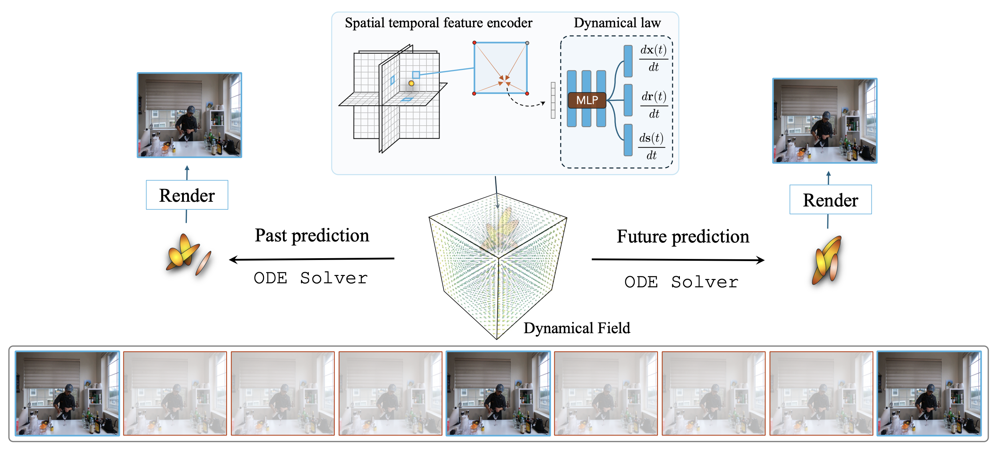

EvoGS: 4D Gaussian Splatting as a Learned Dynamical System
 Paper
Paper
2Columbia University
Abstract
We reinterpret 4D Gaussian Splatting as a continuous-time dynamical system, where scene motion arises from integrating a learned neural dynamical field rather than applying per-frame deformations. This formulation, which we call EvoGS, treats the Gaussian representation as an evolving physical system whose state evolves continuously under a learned motion law. This unlocks capabilities absent in deformation-based approaches: (1) sample-efficient learning from sparse temporal supervision by modeling the underlying motion law; (2) temporal extrapolation enabling forward and backward prediction beyond observed time ranges; and (3) compositional dynamics that allow localized dynamics injection for controllable scene synthesis. Experiments on dynamic scene benchmarks show that EvoGS achieves better motion coherence and temporal consistency compared to deformation-field baselines while maintaining real-time rendering.

Sparse Temporal Reconstruction
EvoGS learns smooth motion from sparse temporal supervision — training on only a subset of frames (e.g., every 3rd frame) yet faithfully reconstructing the full continuous evolution. Explore the 3D point cloud at different timepoints.
Temporal Extrapolation
By learning a continuous velocity field, EvoGS can predict beyond observed frames. The model is trained only on the first half of the sequence (t ≤ 0.50) and extrapolates into the unseen future. Compare observed vs. predicted timepoints below.
Dynamics Injection
Because EvoGS represents motion as a continuous velocity field, we can inject, mix, or replace portions of the flow in specific scene regions without retraining — enabling compositional scene editing and localized motion synthesis.
Citation
@article{asiimwe2025evogs,
title={EvoGS: 4D Gaussian Splatting as a Learned Dynamical System},
author={Asiimwe, Arnold Caleb and Vondrick, Carl},
journal={arXiv preprint arXiv:2025},
year={2025}
}